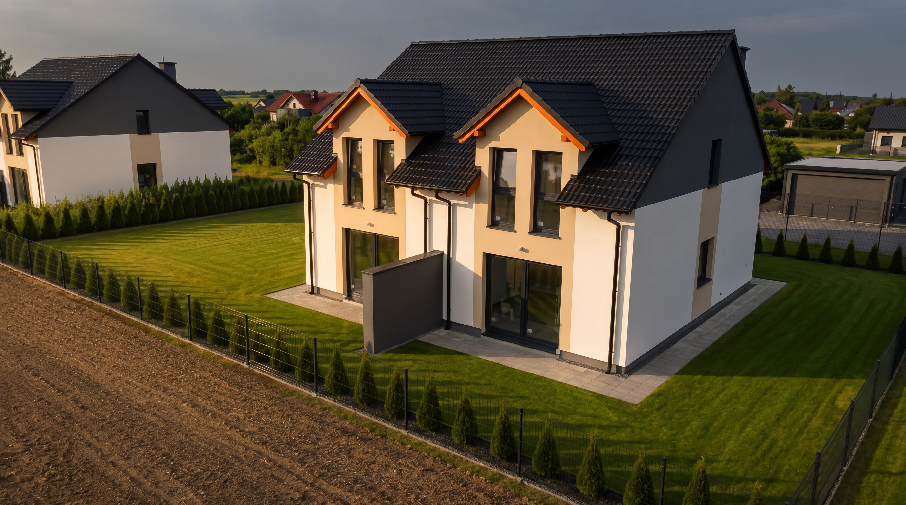
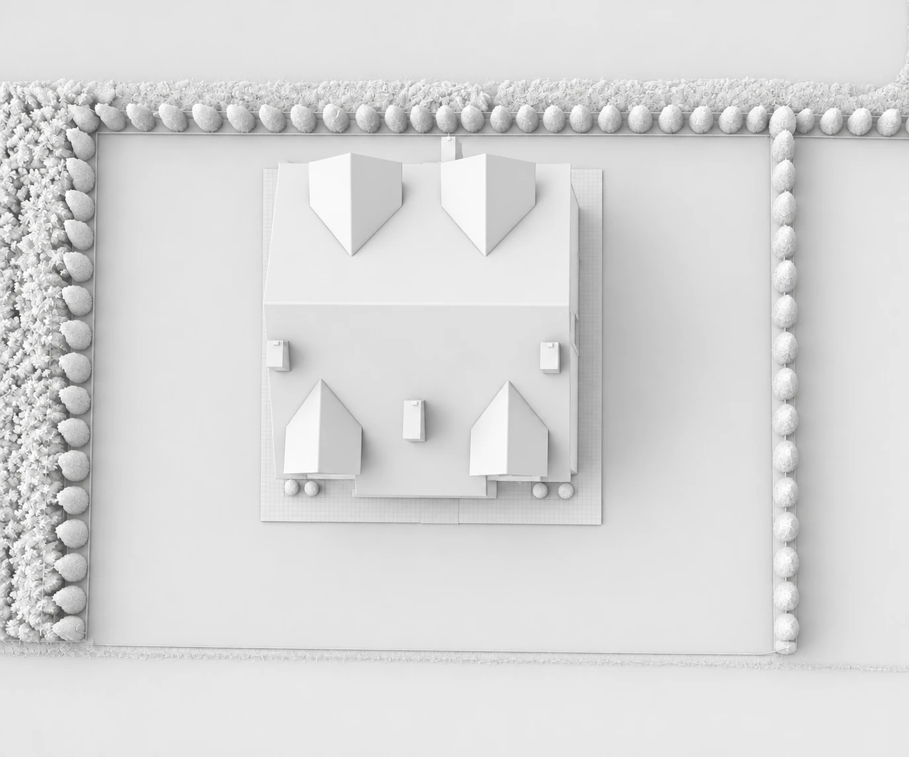

KONARZEWO / KAMERALNA INWESTYCJA
Przestrzeń.
Na własnych
zasadach.
Dom z własnym ogrodem.
Miejsce na Twój rytm życia.
02 / TWÓJ OGRÓD
Codzienność.
Po Twojemu.
01 / MIEJSCE DO ŻYCIA
Więcej przestrzeni.
Własny rytm.
Kameralna inwestycja domów w zabudowie dwulokalowej. Otwarta strefa dzienna, dodatkowy pokój na parterze i własny ogród tworzą miejsce do wspólnego życia, pracy i odpoczynku.
INWESTYCJA W LICZBACH
Twój dom.
Wszystko w jednym miejscu.
- Powierzchnia domu
- 106,10 m²
- Powierzchnia działki
- ok. 350 m²
- Liczba pokoi
- 5 pokoi
- Kondygnacje
- Parter + poddasze
- Standard przekazania
- Stan deweloperski
- Lokalizacja
- Konarzewo
Historia cen lokalu
Aktualna cena: 749 000 zł · 7 059,38 zł/m²
Daty obowiązywania cen i wcześniejsze zmiany wymagają uzupełnienia na podstawie danych dewelopera.
Cena zgodna z Mario-Bud. Dostępność lokalu potwierdzisz w biurze sprzedaży.
02 / STANDARD WYKONANIA
Komfort zaczyna się
od dobrych podstaw.
Konstrukcja i izolacja
Ściany zewnętrzne z ceramiki Porotherm 24 cm, ocieplenie styropianem 20 cm. Drewniana konstrukcja dachu z dachówką betonową. Podwójna ściana między lokalami z warstwą styropianu.
Okna i wykończenie
Okna PCV trzyszybowe, z zewnątrz w kolorze antracytu. Elektryczne rolety zewnętrzne. Ocieplone drzwi wejściowe. Tynki gipsowe, betonowe posadzki i schody.
Instalacje
Ogrzewanie podłogowe w całym domu. Przygotowane instalacje elektryczne i wodno-kanalizacyjne. Media wymienione w ofercie: prąd, woda, gaz i zbiornik bezodpływowy 10 m³.
Ogród i teren
Ogrodzenie boczne z siatki, frontowa furtka i brama panelowa. Wyrównanie terenu oraz dojście do domu z grafitowej kostki brukowej. Salon i taras skierowane na północny zachód.

DOM / WŁASNA DZIAŁKA
Twoja część.
Własna przestrzeń.
Najedź na zdjęcie lub dotknij go, aby wyróżnić lewą połowę domu i ogrodu przypisaną do prezentowanego lokalu. Powierzchnia działki: około 350 m² na lokal.


DOJAZD03 / UKŁAD DOMU
Każdy metr
ma znaczenie.

Lokal 1. Lokal 2 ma układ lustrzany. Wizualizacje 3D przedstawiają koncepcyjną aranżację wnętrz na podstawie rzutów. Dokumentację układu znajdziesz w widoku 2D oraz w PDF.
ARCHITEKTURA / GALERIA
Z każdej
perspektywy.

Zdjęcia z oferty źródłowej przedstawiają wcześniejsze realizacje.
POROZMAWIAJMY O TWOIM DOMU